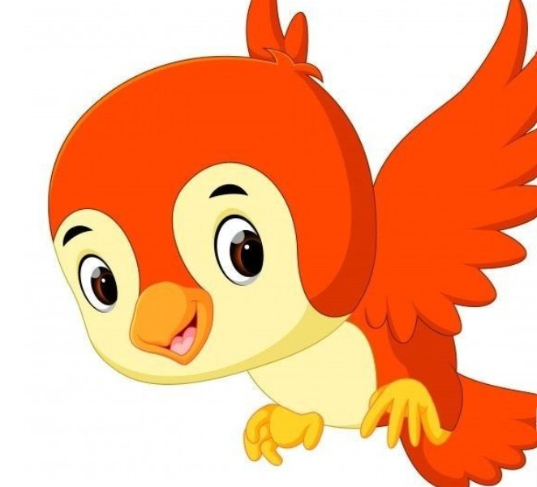
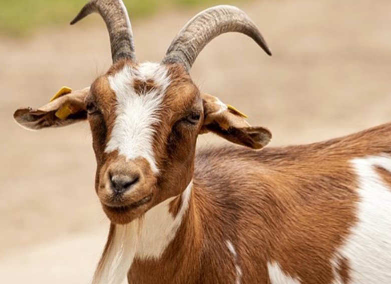

Birds play an important role on our planet because they help keep ecosystems balanced. Many birds spread seeds from fruits they eat, which helps plants grow in new places and supports forests and other habitats. Some birds also control insect populations by feeding on pests, which protects crops and reduces the need for chemicals. Birds are also part of the food chain, serving as both predators and prey, which helps maintain natural balance. Overall, birds contribute to biodiversity and help keep the environment healthy.

Goats play an important role on the planet because they help manage vegetation and support ecosystems. They are natural browsers that eat a wide variety of plants, including shrubs, weeds, and grasses, which can help prevent overgrowth and reduce the risk of wildfires in some areas. In farming, goats provide useful products like milk, meat, and fiber, supporting human livelihoods. Their grazing also helps recycle nutrients back into the soil through their waste, improving soil health. Overall, goats contribute to both natural ecosystems and agriculture by helping balance plant growth and supporting food production.